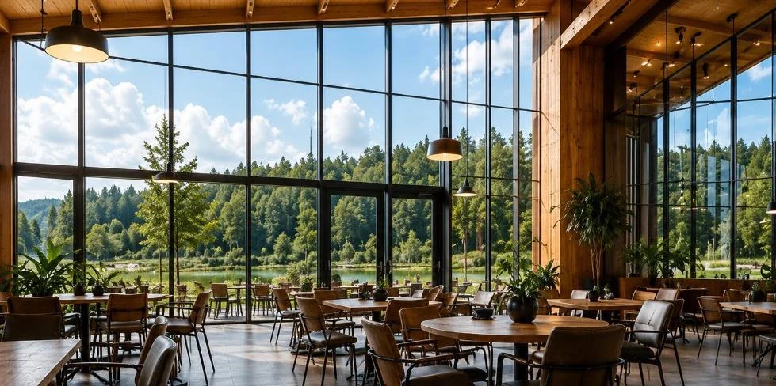

Центр агрокреаномики
«Мироселье» создаёт Центр агрокреаномики. Мы хотим познакомить фермеров с поварами, дизайнерами и предпринимателями, чтобы вместе они могли придумывать новые продукты и услуги для села.

От урожая до прилавка
Допустим, фермер выращивает ягоды и хочет продавать их после окончания сезона. С поваром он может подобрать рецепт, с дизайнером продумать упаковку, а на ярмарке дать покупателям попробовать первую партию.
Так мы представляем работу центра. У одного участника есть сырьё, у другого опыт переработки, у третьего своя лавка. На встрече они смогут договориться, что попробовать вместе и как разделить расходы.
Чему здесь смогут научиться
В замысел центра входят практические занятия и встречи с хозяйствами. Молодые авторы смогут принести свою идею, обсудить её с людьми, которым она может пригодиться, и посчитать, во что обойдётся первая проба.
Этому посвящена и наша молодёжная программа «Башкирское поле экспериментов».
Открыть концепцию пилотной территории в PDF ↗